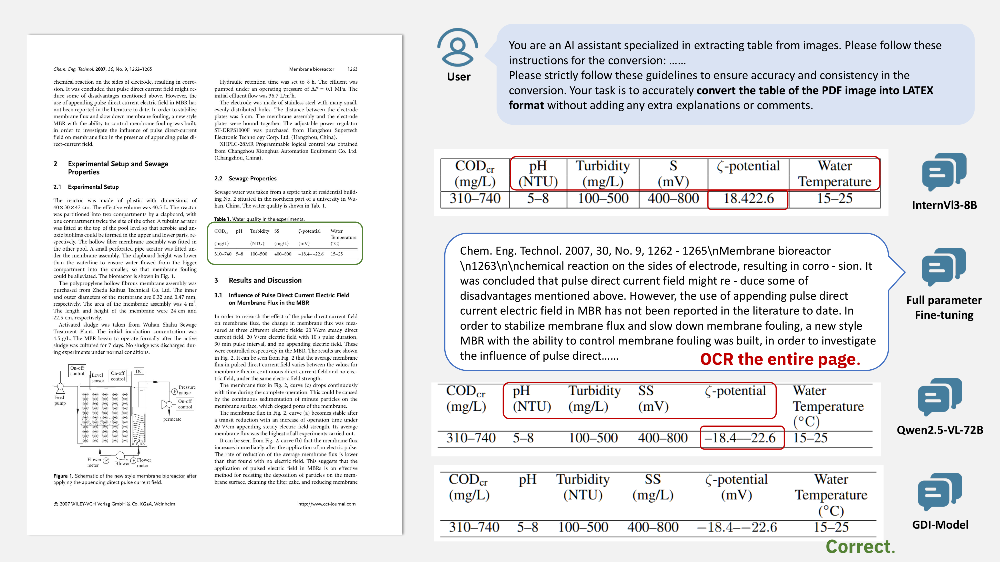

GDI-Bench and GDI-Model
To assist Multimodal Large Language Models (MLLMs) in locating their weaknesses within the document domain and to further guide model optimization, we first constructed a benchmark. GDI-Bench decouples task complexity into two distinct dimensions—visual complexity and reasoning complexity—and establishes a graded mechanism.
Complexity Distribution in the GDI Benchmark. The visual complexity dimension is operationalized through a hierarchical categorization of document images into three levels: V0 (plain text), V1 (formal representations), and V2 (explanatory representations). In parallel, the dimension of reasoning complexity is characterized by three categories: R0 (Full Page Structured Extraction), R1 (Information Extraction), and R2 (Reasoning).
After using GDI-Bench to identify the model's weaknesses, we employed the supervised fine-tuning (SFT) to enhance the model's performance. To address the catastrophic forgetting issue caused by SFT, we propose the Layer-wise Adaptive Freezing-Tuning (LW-AFT) method.